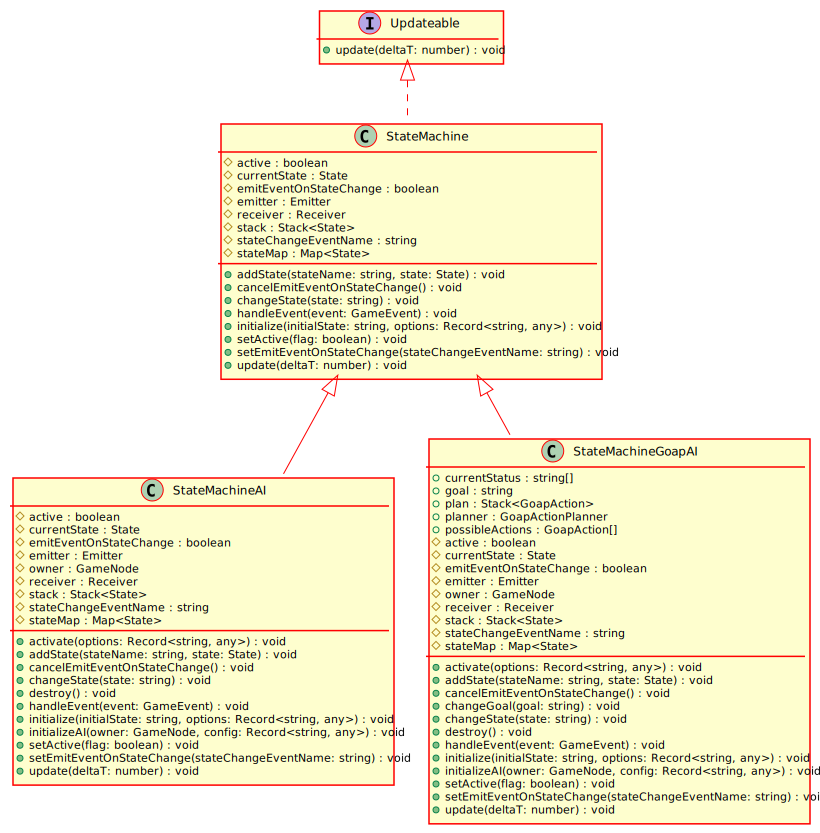

Hierarchy-Diagram
{kind=link}
Legend
 class
class
 interface
interface
 public property
public property
 protected property
protected property
 public method
public method
Hierarchy
- StateMachine
Implements
Index
Constructors
constructor
Creates a new StateMachine
Returns StateMachine
Properties
Protected active
A boolean representing whether or not this StateMachine is currently active
Protected current
The current state
Protected emit
A boolean representing whether or not this StateMachine should emit an event on state change
Protected emitter
An event emitter
Protected receiver
An event receiver
Protected stack
A stack of the current states
Protected state
The name of the event to be emitted on state change
Protected state
A mape of state keys to actual state instances
Methods
add
Adds a state to this state machine
Parameters
stateName: string
The name of the state to add
state: State
The state to add
Returns void
cancel
Stops this state machine from emitting events on state change.
Returns void
change
Changes the state of this state machine to the provided string
Parameters
state: string
The string name of the state to change to
Returns void
handle
Handles input. This happens at the very beginning of this state machine's update cycle.
Parameters
event: GameEvent
The game event to process
Returns void
initialize
Initializes this state machine with an initial state and sets it running
Parameters
initialState: string
The name of initial state of the state machine
Optional options: Record<string, any>
Returns void
set
Sets the activity state of this state machine
Parameters
flag: boolean
True if you want to set this machine running, false otherwise
Returns void
set
Makes this state machine emit an event any time its state changes
Parameters
stateChangeEventName: string
The name of the event to emit
Returns void
update
Updates this object.
Parameters
deltaT: number
Returns void
An implementation of a Push Down Automata State machine. States can also be hierarchical for more flexibility, as described in @link(Game Programming Patterns)(https://gameprogrammingpatterns.com/state.html).